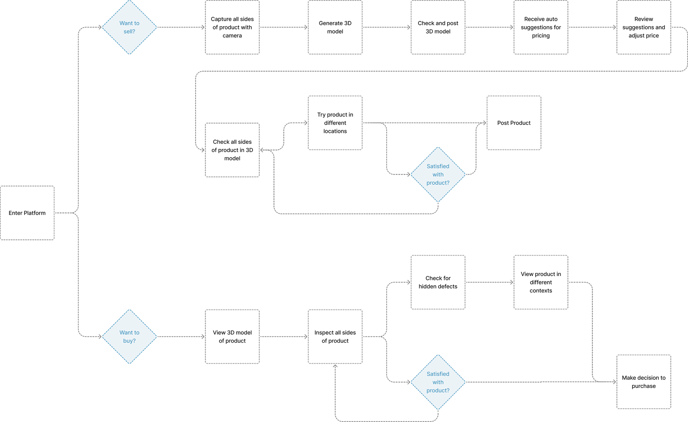
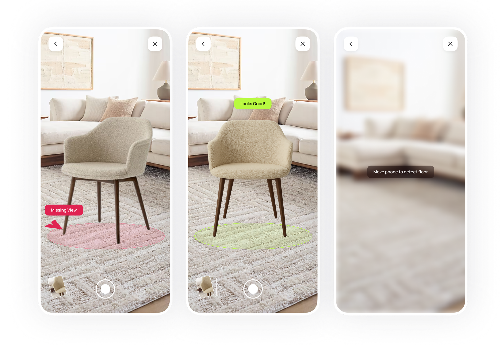
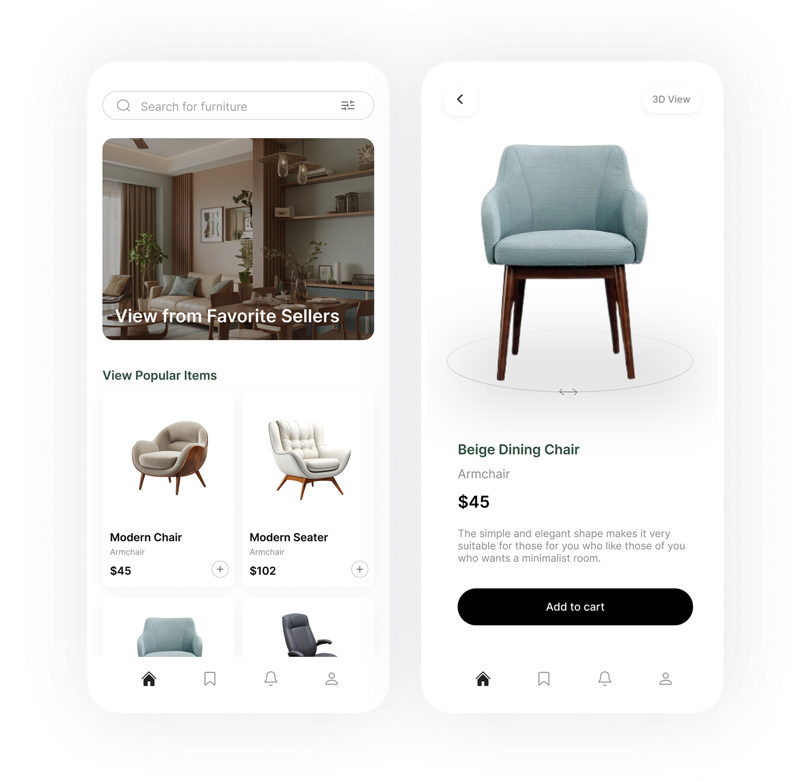
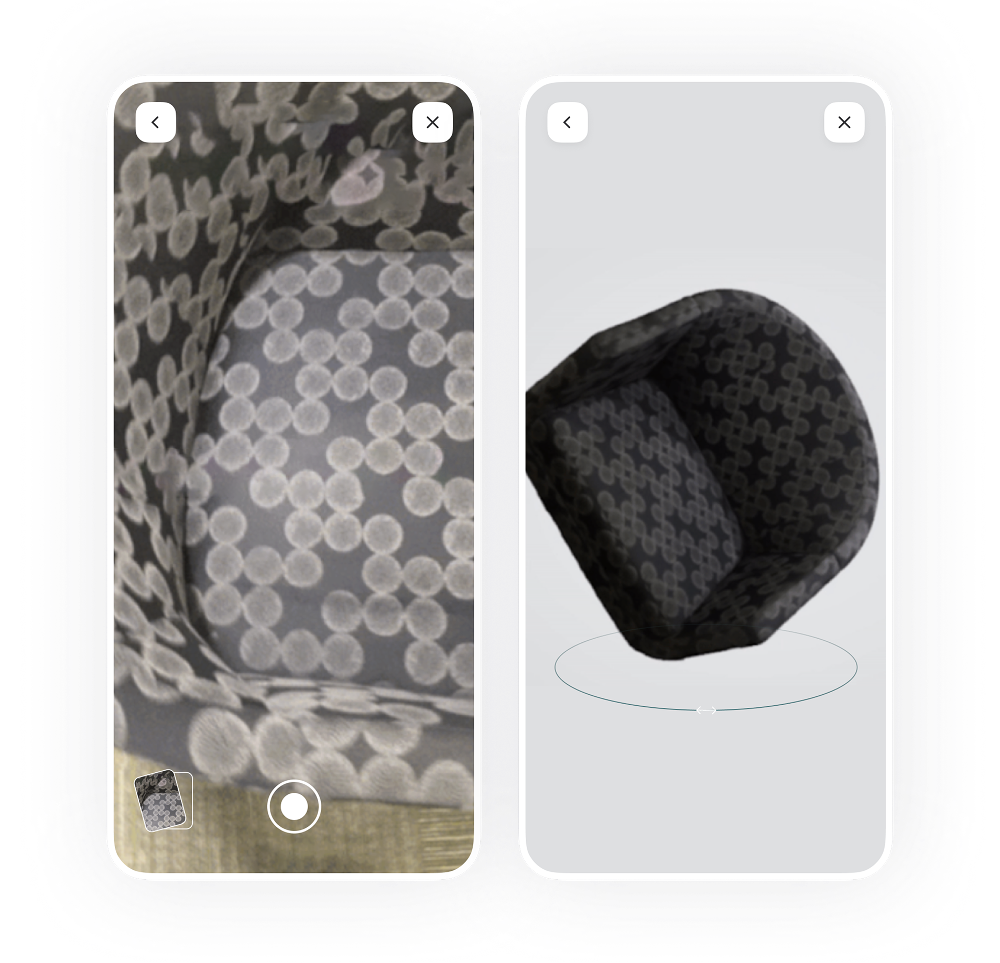
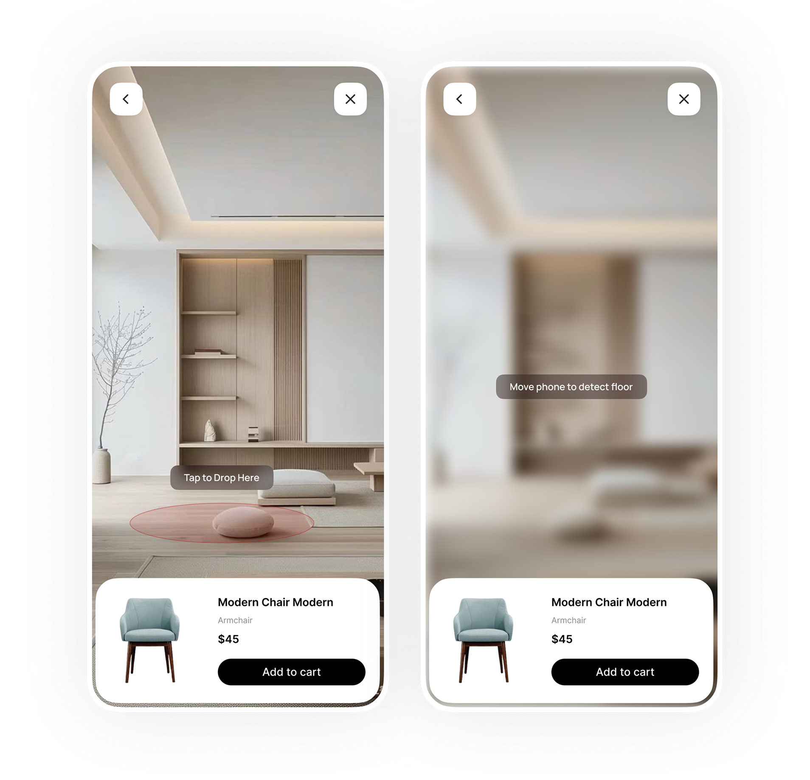
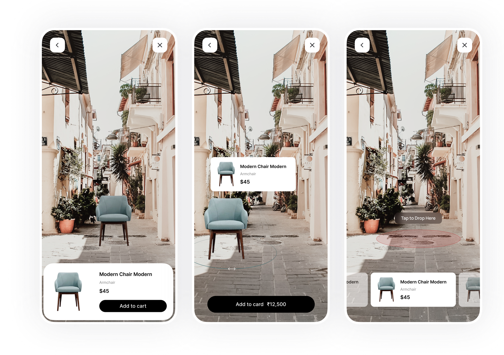

Selling furniture and home goods online means buyers are making hundred-dollar decisions based on flat photos. We designed a photogrammetry app that lets sellers capture any object with their phone camera and generate a full 3D model — so buyers can inspect every angle and place it in their own space before purchasing.
The challenge was making professional-grade 3D capture feel as simple as taking a photo, while giving buyers an AR experience that builds genuine confidence in what they're buying.
The app serves two distinct users — sellers who need to capture and list products, and buyers who want to evaluate them in context. We designed each flow independently, then unified them into a single marketplace experience where 3D and AR are the default, not a feature.


Buyers browse a familiar marketplace interface, but every product listing includes a live AR view. Place any item in your room, check the fit from every angle, and confirm before you buy.

The marketplace surfaces popular items with 3D thumbnails. Open any listing and rotate the full model — inspecting texture, scale, and form from every angle before committing to a purchase.

Sellers circle their product slowly with their phone camera. The app processes the footage and generates a photorealistic 3D model in under a minute — no studio, no equipment, no expertise required.

The AR experience detects the floor plane and drops the product into the buyer's actual space. Lighting adapts to the real environment so the object looks like it belongs — not like it was composited on top.

Try any product in any environment — indoors, outdoors, different rooms. The AR layer persists as you move, so buyers can genuinely experience how a piece fits their life before it arrives at their door.
Buyers who used the AR view before purchasing returned products at a significantly lower rate — they knew exactly what they were getting before it arrived. Sellers with 3D listings received measurably more saves and add-to-cart actions than those with photos alone.
By closing the gap between what a product looks like online and what it looks like in your home, the app turns browsing into confidence.